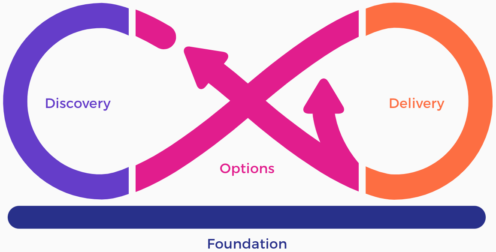
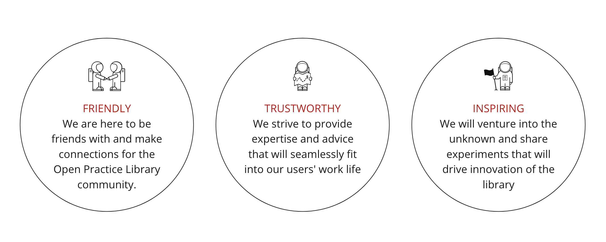

DevOps Culture and Practice
Open Practice Library
TL500
Open Practice Library
What is it?
- Open source community-driven repository of practices and tools
- Practices are created by people currently using them on daily basis
What is it not?
- It is not a methodology or framework. It does not tell you exactly which practice to use when and where
- We will not say there is one right way to do things because it does not exist. Our approach is to adapt based on context, learning, and experience
Open Practice Library Core Values

Open Practice Library in a Nutshell

Why use it?
Practices are created by people currently using them on daily basis for people looking to be inspired with new ideas and experience
Open Practice Library

Open Practice Library